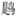
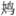

①
，可怜又是、春归时节。满院东风，海棠铺绣，梨花飘雪。 丁香露泣残枝，算未比、愁肠寸结②
。自是休文③
，多情多感，不干风月。
①
，可怜又是、春归时节。满院东风，海棠铺绣，梨花飘雪。 丁香露泣残枝，算未比、愁肠寸结②
。自是休文③
，多情多感，不干风月。柳 梢 青
蔡 伸
数声
①
，可怜又是、春归时节。满院东风，海棠铺绣，梨花飘雪。 丁香露泣残枝，算未比、愁肠寸结②
。自是休文③
，多情多感，不干风月。
【注释】
①


：也作“鹈 ”，通常指子规、杜鹃。《离骚》：“恐 之先鸣兮，使夫百草为之不芳。”然辛弃疾《贺新郎》云：“绿树听 ；更那堪、鹧鸪声住，杜鹃声切。”其词题称：“ 、杜鹃实两种，见《离骚补注》。”则或以 指杜鹃科的“鹰鹃”。 ②“丁香”二句：是贺铸《石州慢》“芭蕉不展丁香结”注。 ③休文：沈约，字休文，仕宋及齐，不得大用，郁郁成病，消瘦异常，卒后，有司提出谥为“文”，帝曰：“怀情不尽曰‘隐’。”遂改为“隐”。【语译】
传来几声杜鹃的啼叫声，可怜又到春天回去的时候了。东风满庭院，吹得海棠花如锦绣铺地，梨花像雪花似的飘飘。
丁香花的残枝上滴着露水，仿佛是哭泣的泪珠，想来也比不上我愁肠寸寸郁结。我就像沈约，多情善感，实在与风月之事无关。
【赏析】
短小的词往往略去人与事的个别特征，只留下共同性的一面，这首伤春词即如此；我们只知道作者“多情多感”，因“春归”而“愁肠寸结”，却无法进一步说出还有什么别的原因。
词分四个层次，每到句号标点处是一层；上下片各两层，上片说春归，下片说愁绪。
说春归，再分听到和看到。听到的是“数声 ”，又连带写想到已经是“春归时节”；用“可怜”二字，在写景之中夹入抒情，以突出伤春的主题。在写看到的景象时，则表明是以庭院作为描写环境的。“海棠铺绣，梨花飘雪”八字成对，竭力描摹渲染，把衰败与绚丽结合在一起，让景象本身来代替作者直接说“可怜”，以表现无限惋惜之情。
下片说愁，仍先用一句景语过片。但这句中的景物是为了与“愁肠寸结”作比较而写的。丁香花蕾密集，常比结愁之多，如南唐中主李璟有“丁香空结雨中愁”之句。这里正借此作比，以强调愁肠郁结之甚。那么愁是因何而生的呢？最后一层回答这个问题。用力主写诗要辨“四声”、避“八病”的沈约自喻，说是因“多情多感”所致，并“不干风月”之事。这里的“风月”是指景物，包括了 、落花等等，也就是说伤春并非为了花月春风本身的逝去，而是另有感触联想。诸如年华将暮、青春虚掷、所思在远、功名未酬等等都无不可。但究为何种呢？小词不明言，含混些应该是容许的，未必就可以责其为无病呻吟的。